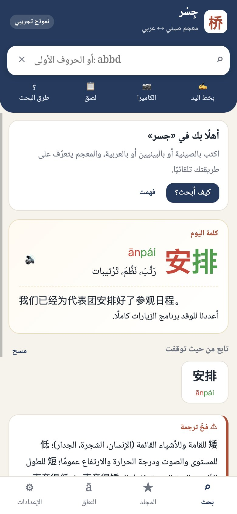
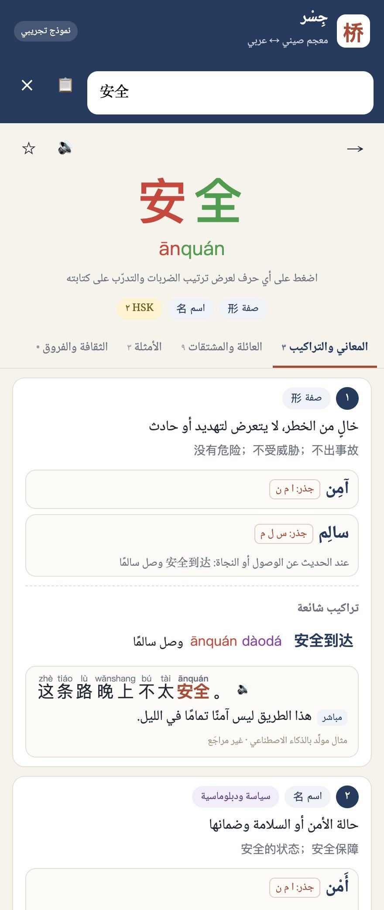
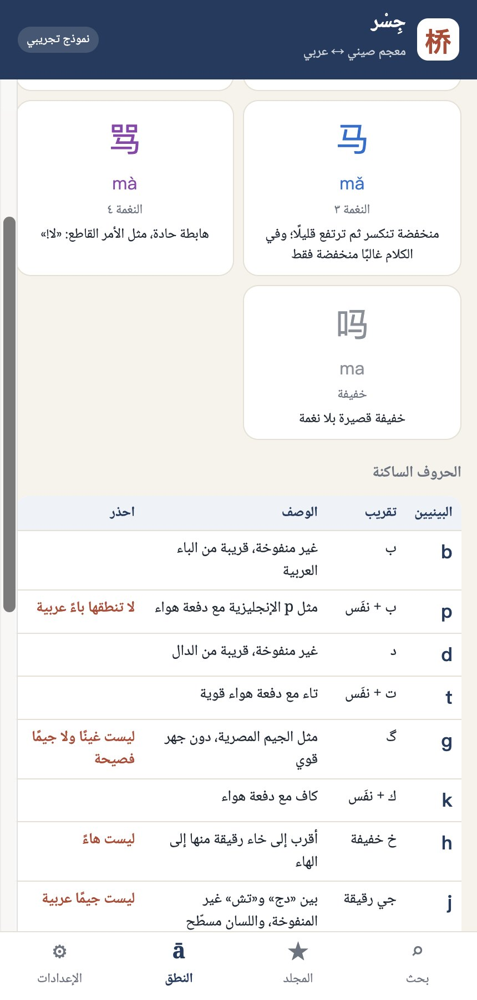
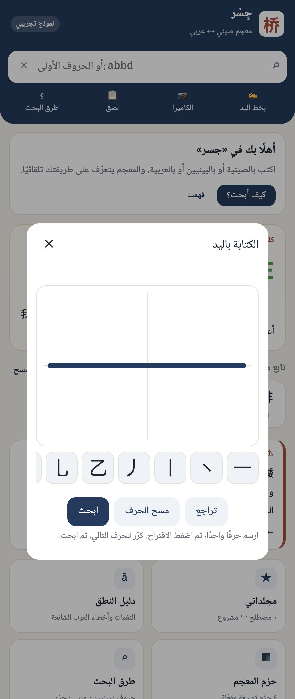

对外汉语学院 · 合作说明
给阿拉伯语母语者用的中文词典
现有的中阿词典，几乎都是给中国人学阿拉伯语的。阿拉伯学生学中文时，第一道坎往往不是词义，而是看见汉字读不出来，或者把拼音按阿语字母读错。我们做了一个面向这群人的词典样品，希望和学院一起，把它做成能进课堂的工具。
学生卡在哪里
- 查不到字不会拼音，就无法输入汉字。手写和拍照是入口，不是附加功能。
- 拼音读错阿语读者会把 q 读成 ق，把 x 读成「克斯」，把 h 读成 ه。这些要在词典里直接写明。
- 语法看不见量词、离合词、声调，需要用学生的母语讲清楚，而不是只标一个符号。
- 译法会出错「粮食安全」是 الأمن الغذائي，「食品安全」是 سلامة الأغذية。这种差别决定译文是否能用。
样品里已经能看见的
下面四张图都来自当前样品。词条大约三十个，用来看结构和教法，不是成品词库。




为什么现在就要学院参与
缺的不是更多按钮。样品里的阿语释义和例句是草稿，没有经过母语者审校；HSK 等级只是示意。哪一条拼音说明能纠正误读，哪一条翻译陷阱值得写进词条，要由教汉语的老师判断。晚一点再请学院看，改的就是已经写错的内容。
建议先做的四件事
- 用一小时看样品。请院长或一位老师当场试三个查询：安全、abbd、س ل م，再打开底部的「النطق」（发音）。
- 请两位教师做学术顾问，只看三块：拼音误读、量词和离合词、例句能不能进课堂。
- 请一个阿拉伯学生小班试用两周。只记录三件事：能不能查到字，拼音说明有没有纠正读法，翻译陷阱有没有用。
- 顾问核定的讲法写入词条，并在产品里署学院和老师的名字。
这一步不谈投资，也不谈独家。学院付出的是专业判断和一次小规模试用；我们付出样品、修改，以及把课堂里验证过的讲法做成学生每天能查的工具。
本页图片截自 2026 年 10 月的网页样品。样品内容尚未审校，不能当作教材或正式译文。可打印本页，或把上面的链接发给同事。